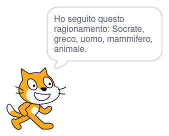

risorse | scratch… ragiona!
Scratch pronto a dimostrare la sua sagacia!
Syllogy è un programma che risolve sillogismi; a partire da due premesse nella forma:
conclude autonomamente “un A è un C” (sillogismo categorico affermativo).
Ricordiamo tutti il classico esempio di sillogismo:
Syllogy riconosce premesse nella forma:
| il lo la l' un uno una un' |
[minore] | è | un uno una un' |
[maggiore] |
Gli articoli sono opzionali, i nomi delle categorie minore e maggiore devono essere composti da una sola parola. La premessa “un uccello è una creatura alata” non è accettata da Syllogy perché “creatura alata” è composta da due termini.
All'avvio Syllogy non sa nulla. Si inizia perciò con l'immettere alcune premesse:
A questo punto si può già interrogare il programma. Se il testo immesso termina con un punto interrogativo Syllogy verifica se è derivabile dalle premesse che conosce:
Il programma attende l'input dell'utente, quindi analizza la frase verificando se contiene un punto interrogativo, condizione che discrimina tra una premessa da memorizzare e una da verificare. In entrambi i casi Syllogy estrae dalla frase le singole parole di cui è composta inserendole nella lista words a meno che non facciano parte dell'elenco di parole non significative stop words. Se tutto va come previsto nella lista words finiscono esattamente due parole, quelle che corrispondono alle categorie minore e maggiore. Se così non è il programma conclude che qualcosa dev'essere andato storto e risponde “Mi dispiace, non capisco…”.
Nel caso l'utente abbia immesso una premessa, le due parole chiave estratte dal testo sono inserite nelle due liste parallele minor e major. Dopo le prime due premesse il contenuto delle due liste è:
| minor | major |
|---|---|
| cane | mammifero |
| mammifero | animale |
Nel caso di un'interrogazione il programma deve verificare se dalla prima parola estratta dalla domanda si può giungere alla seconda. Per far ciò inserisce la prima parola nella lista words to examine e comincia a sostituire ogni parola della lista con le corrispondenti in major, fino a quando la seconda parola entra nella lista oppure la lista si svuota. Nel primo caso la risposta sarà affermativa, nel secondo negativa.
Ad esempio, per rispondere alla domanda “un cane è un animale?” Syllogy carica la prima parola chiave della domanda nella lista delle parole da considerare:
| words to examine |
|---|
| cane |
Syllogy controlla poi se la seconda parola chiave, “animale”, è in lista. Poiché tale parola non c'è, prende la prima parola il lista, la toglie dalla lista e la sostituisce con le parole ad essa collegate nella lista major. Alla parola “cane” c'è n'è associata una sola, “mammifero”, ed è questa che viene aggiunta in coda alla lista:
| words to examine |
|---|
| mammifero |
“animale” non appare ancora, ma siccome la lista non è vuota il programma prosegue sostituendo la prima parola in elenco con quelle ad essa collegate, come già fatto per “cane”. C\'è una parola associata a “mammifero”, guardacaso proprio “animale”:
| words to examine |
|---|
| animale |
La presenza della parola “animale” nella lista words to examine permette finalmente al programma di concludere che la risposta alla domanda iniziale è affermativa:
Ora è chiaro perché anche le due domande successive ricevono la stessa risposta:
Sia “mammifero” che “cane” hanno fatto parte della lista ad un certo punto e hanno dunque permesso al programma di uscire con successo dal ciclo di sostituzione delle parole.
Come mai invece l'ultima interrogazione riceve una risposta negativa?
Riapplichiamo l'algoritmo: si parte da “mammifero”, si vuole arrivare a “cane”.
Il primo passo è:
| words to examine |
|---|
| mammifero |
“cane” non è in lista, si passa alla sostituzione di “mammifero”:
| words to examine |
|---|
| animale |
La parola cercata non è ancora apparsa, si prosegue con la sostituzione di “animale”:
| words to examine |
|---|
Non essendoci alcuna parola associata a “animale” in major, la lista words to examine alla fine rimane vuota e quindi il programma conclude che non c'è relazione tra le due categorie.
Il programma può contenere informazioni relative a diversi argomenti. Lo si può per esempio mettere alla prova con una forma più complessa del sillogismo più famoso citato all'inizio:
Come risponderà Syllogy alla domanda:
Incrociamo tra loro le due catene deduttive che abbiamo costruito:
Quali saranno le risposte di Syllogy ai quesiti:
Il listato completo del programma.
Vale la pena citare la procedura split words che scandisce il testo immesso dall'utente e che determina la fine di una parola quando trova uno spazio o un'apostrofo – cfr. lista delimiters. Una tecnica simile (scansione lineare del testo) è adottata nel blocco principale per eliminare il punto di domanda presente nelle interrogazioni.
Il programma è scaricabile qui.
Fare in modo che il programma funzioni in lingua inglese.
Estendere il programma in modo che tratti correttamente anche il caso di categorie formate da più parole, come nell'esempio “un uccello è una creatura alata”.
Illustrare il percorso deduttivo che ha portato a dichiarare vera un'interrogazione. Ecco una possibile risposta alla domanda “Socrate è un animale?”:
Potrete poi confrontare la vostra soluzione con la mia, nella quale ho implementato una visita in profondità dell'albero deduttivo (cfr. variabili depth e word depth) che mi permette di mantenere aggiornata la catena di parole attualmente considerata (cfr. variabile word chain e blocco evaluating word () at depth ()).
Pagina modificata il 01/05/2021